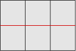

Line elements
using FerriteTikzLine and QuadraticLine cells are supported in both one- and two-dimensional space. They cover one-dimensional meshes, trusses, frames and reinforcement bars embedded in a solid.
Because a line element encloses no area, it is treated differently from an area cell in two ways:
- it is stroked, never filled —
cellcolorandcellsetcolorsset the stroke colour; - it is drawn once per cell, without deduplication — a member is an element in its own right, not a boundary shared between two cells.
One-dimensional meshes
A grid with Ferrite.getspatialdim(grid) == 1 is drawn along the x axis:
grid = generate_grid(Line, (6,))tikzgrid(grid; drawnodes = true, nodelabels = true, celllabels = true, picturescale = 3)Trusses and frames
The same cells in a two-dimensional grid give a truss. cellsetcolors is the natural way to pick out members:
nodes = [ Node((0.0, 0.0)), Node((1.0, 0.0)), Node((2.0, 0.0)), Node((3.0, 0.0)), Node((0.5, 0.8)), Node((1.5, 0.8)), Node((2.5, 0.8)),]members = [ Line((1, 2)), Line((2, 3)), Line((3, 4)), # bottom chord Line((5, 6)), Line((6, 7)), # top chord Line((1, 5)), Line((5, 2)), Line((2, 6)), # web Line((6, 3)), Line((3, 7)), Line((7, 4)),]truss = Grid(members, nodes)addcellset!(truss, "bottom", 1:3)addcellset!(truss, "top", 4:5)tikzgrid( truss; cellsetcolors = ["bottom" => "blue!60!black", "top" => "red!60!black"], linewidth = "thick", drawnodes = true, picturescale = 2,)![](data:image/svg+xml;utf-8,<?xml version="1.0" encoding="UTF-8"?>
<svg xmlns="http://www.w3.org/2000/svg" xmlns:xlink="http://www.w3.org/1999/xlink" width="172.35" height="47.62" viewBox="0 0 172.35 47.62">
<defs>
<clipPath id="clip-1786204754120733--0">
<path clip-rule="nonzero" d="M 0.359375 0 L 41 0 L 41 47.242188 L 0.359375 47.242188 Z M 0.359375 0 "/>
</clipPath>
<clipPath id="clip-1786204754120733--1">
<path clip-rule="nonzero" d="M 18 0 L 69 0 L 69 47.242188 L 18 47.242188 Z M 18 0 "/>
</clipPath>
<clipPath id="clip-1786204754120733--2">
<path clip-rule="nonzero" d="M 46 0 L 98 0 L 98 47.242188 L 46 47.242188 Z M 46 0 "/>
</clipPath>
<clipPath id="clip-1786204754120733--3">
<path clip-rule="nonzero" d="M 74 0 L 126 0 L 126 47.242188 L 74 47.242188 Z M 74 0 "/>
</clipPath>
<clipPath id="clip-1786204754120733--4">
<path clip-rule="nonzero" d="M 102 0 L 154 0 L 154 47.242188 L 102 47.242188 Z M 102 0 "/>
</clipPath>
<clipPath id="clip-1786204754120733--5">
<path clip-rule="nonzero" d="M 130 0 L 171.34375 0 L 171.34375 47.242188 L 130 47.242188 Z M 130 0 "/>
</clipPath>
<clipPath id="clip-1786204754120733--6">
<path clip-rule="nonzero" d="M 0.359375 44 L 3 44 L 3 47.242188 L 0.359375 47.242188 Z M 0.359375 44 "/>
</clipPath>
<clipPath id="clip-1786204754120733--7">
<path clip-rule="nonzero" d="M 56 44 L 59 44 L 59 47.242188 L 56 47.242188 Z M 56 44 "/>
</clipPath>
<clipPath id="clip-1786204754120733--8">
<path clip-rule="nonzero" d="M 112 44 L 116 44 L 116 47.242188 L 112 47.242188 Z M 112 44 "/>
</clipPath>
<clipPath id="clip-1786204754120733--9">
<path clip-rule="nonzero" d="M 169 44 L 171.34375 44 L 171.34375 47.242188 L 169 47.242188 Z M 169 44 "/>
</clipPath>
</defs>
<path fill="none" stroke-width="0.79701" stroke-linecap="butt" stroke-linejoin="miter" stroke="rgb(0%25, 0%25, 59.999084%25)" stroke-opacity="1" stroke-miterlimit="10" d="M -0.000312671 0.000924704 L 56.694616 0.000924704 " transform="matrix(0.992083, 0, 0, -0.992083, 1.484685, 46.118105)"/>
<path fill="none" stroke-width="0.79701" stroke-linecap="butt" stroke-linejoin="miter" stroke="rgb(0%25, 0%25, 59.999084%25)" stroke-opacity="1" stroke-miterlimit="10" d="M 56.694616 0.000924704 L 113.385607 0.000924704 " transform="matrix(0.992083, 0, 0, -0.992083, 1.484685, 46.118105)"/>
<path fill="none" stroke-width="0.79701" stroke-linecap="butt" stroke-linejoin="miter" stroke="rgb(0%25, 0%25, 59.999084%25)" stroke-opacity="1" stroke-miterlimit="10" d="M 113.385607 0.000924704 L 170.080536 0.000924704 " transform="matrix(0.992083, 0, 0, -0.992083, 1.484685, 46.118105)"/>
<path fill="none" stroke-width="0.79701" stroke-linecap="butt" stroke-linejoin="miter" stroke="rgb(59.999084%25, 0%25, 0%25)" stroke-opacity="1" stroke-miterlimit="10" d="M 28.345183 45.35608 L 85.040112 45.35608 " transform="matrix(0.992083, 0, 0, -0.992083, 1.484685, 46.118105)"/>
<path fill="none" stroke-width="0.79701" stroke-linecap="butt" stroke-linejoin="miter" stroke="rgb(59.999084%25, 0%25, 0%25)" stroke-opacity="1" stroke-miterlimit="10" d="M 85.040112 45.35608 L 141.73504 45.35608 " transform="matrix(0.992083, 0, 0, -0.992083, 1.484685, 46.118105)"/>
<g clip-path="url(%23clip-1786204754120733--0)">
<path fill="none" stroke-width="0.79701" stroke-linecap="butt" stroke-linejoin="miter" stroke="rgb(0%25, 0%25, 0%25)" stroke-opacity="1" stroke-miterlimit="10" d="M -0.000312671 0.000924704 L 28.345183 45.35608 " transform="matrix(0.992083, 0, 0, -0.992083, 1.484685, 46.118105)"/>
</g>
<g clip-path="url(%23clip-1786204754120733--1)">
<path fill="none" stroke-width="0.79701" stroke-linecap="butt" stroke-linejoin="miter" stroke="rgb(0%25, 0%25, 0%25)" stroke-opacity="1" stroke-miterlimit="10" d="M 28.345183 45.35608 L 56.694616 0.000924704 " transform="matrix(0.992083, 0, 0, -0.992083, 1.484685, 46.118105)"/>
</g>
<g clip-path="url(%23clip-1786204754120733--2)">
<path fill="none" stroke-width="0.79701" stroke-linecap="butt" stroke-linejoin="miter" stroke="rgb(0%25, 0%25, 0%25)" stroke-opacity="1" stroke-miterlimit="10" d="M 56.694616 0.000924704 L 85.040112 45.35608 " transform="matrix(0.992083, 0, 0, -0.992083, 1.484685, 46.118105)"/>
</g>
<g clip-path="url(%23clip-1786204754120733--3)">
<path fill="none" stroke-width="0.79701" stroke-linecap="butt" stroke-linejoin="miter" stroke="rgb(0%25, 0%25, 0%25)" stroke-opacity="1" stroke-miterlimit="10" d="M 85.040112 45.35608 L 113.385607 0.000924704 " transform="matrix(0.992083, 0, 0, -0.992083, 1.484685, 46.118105)"/>
</g>
<g clip-path="url(%23clip-1786204754120733--4)">
<path fill="none" stroke-width="0.79701" stroke-linecap="butt" stroke-linejoin="miter" stroke="rgb(0%25, 0%25, 0%25)" stroke-opacity="1" stroke-miterlimit="10" d="M 113.385607 0.000924704 L 141.73504 45.35608 " transform="matrix(0.992083, 0, 0, -0.992083, 1.484685, 46.118105)"/>
</g>
<g clip-path="url(%23clip-1786204754120733--5)">
<path fill="none" stroke-width="0.79701" stroke-linecap="butt" stroke-linejoin="miter" stroke="rgb(0%25, 0%25, 0%25)" stroke-opacity="1" stroke-miterlimit="10" d="M 141.73504 45.35608 L 170.080536 0.000924704 " transform="matrix(0.992083, 0, 0, -0.992083, 1.484685, 46.118105)"/>
</g>
<g clip-path="url(%23clip-1786204754120733--6)">
<path fill-rule="nonzero" fill="rgb(0%25, 0%25, 0%25)" fill-opacity="1" d="M 2.609375 46.117188 C 2.609375 45.496094 2.105469 44.992188 1.484375 44.992188 C 0.863281 44.992188 0.359375 45.496094 0.359375 46.117188 C 0.359375 46.738281 0.863281 47.242188 1.484375 47.242188 C 2.105469 47.242188 2.609375 46.738281 2.609375 46.117188 Z M 2.609375 46.117188 "/>
</g>
<g clip-path="url(%23clip-1786204754120733--7)">
<path fill-rule="nonzero" fill="rgb(0%25, 0%25, 0%25)" fill-opacity="1" d="M 58.855469 46.117188 C 58.855469 45.496094 58.351562 44.992188 57.730469 44.992188 C 57.109375 44.992188 56.605469 45.496094 56.605469 46.117188 C 56.605469 46.738281 57.109375 47.242188 57.730469 47.242188 C 58.351562 47.242188 58.855469 46.738281 58.855469 46.117188 Z M 58.855469 46.117188 "/>
</g>
<g clip-path="url(%23clip-1786204754120733--8)">
<path fill-rule="nonzero" fill="rgb(0%25, 0%25, 0%25)" fill-opacity="1" d="M 115.097656 46.117188 C 115.097656 45.496094 114.59375 44.992188 113.972656 44.992188 C 113.351562 44.992188 112.847656 45.496094 112.847656 46.117188 C 112.847656 46.738281 113.351562 47.242188 113.972656 47.242188 C 114.59375 47.242188 115.097656 46.738281 115.097656 46.117188 Z M 115.097656 46.117188 "/>
</g>
<g clip-path="url(%23clip-1786204754120733--9)">
<path fill-rule="nonzero" fill="rgb(0%25, 0%25, 0%25)" fill-opacity="1" d="M 171.34375 46.117188 C 171.34375 45.496094 170.839844 44.992188 170.21875 44.992188 C 169.597656 44.992188 169.09375 45.496094 169.09375 46.117188 C 169.09375 46.738281 169.597656 47.242188 170.21875 47.242188 C 170.839844 47.242188 171.34375 46.738281 171.34375 46.117188 Z M 171.34375 46.117188 "/>
</g>
<path fill-rule="nonzero" fill="rgb(0%25, 0%25, 0%25)" fill-opacity="1" d="M 30.730469 1.121094 C 30.730469 0.5 30.226562 -0.00390625 29.605469 -0.00390625 C 28.984375 -0.00390625 28.480469 0.5 28.480469 1.121094 C 28.480469 1.742188 28.984375 2.246094 29.605469 2.246094 C 30.226562 2.246094 30.730469 1.742188 30.730469 1.121094 Z M 30.730469 1.121094 "/>
<path fill-rule="nonzero" fill="rgb(0%25, 0%25, 0%25)" fill-opacity="1" d="M 86.976562 1.121094 C 86.976562 0.5 86.472656 -0.00390625 85.851562 -0.00390625 C 85.230469 -0.00390625 84.726562 0.5 84.726562 1.121094 C 84.726562 1.742188 85.230469 2.246094 85.851562 2.246094 C 86.472656 2.246094 86.976562 1.742188 86.976562 1.121094 Z M 86.976562 1.121094 "/>
<path fill-rule="nonzero" fill="rgb(0%25, 0%25, 0%25)" fill-opacity="1" d="M 143.222656 1.121094 C 143.222656 0.5 142.71875 -0.00390625 142.097656 -0.00390625 C 141.476562 -0.00390625 140.972656 0.5 140.972656 1.121094 C 140.972656 1.742188 141.476562 2.246094 142.097656 2.246094 C 142.71875 2.246094 143.222656 1.742188 143.222656 1.121094 Z M 143.222656 1.121094 "/>
</svg>)
Curved line elements
A QuadraticLine bent out of its chord is drawn as an exact cubic Bézier, the same machinery that curves quadratic triangle and quadrilateral edges:
arch = Grid( [QuadraticLine((1, 2, 3)), QuadraticLine((2, 4, 5))], [ Node((0.0, 0.0)), Node((2.0, 1.0)), Node((1.0, 0.75)), Node((4.0, 0.0)), Node((3.0, 0.75)), ],)tikzgrid(arch; linewidth = "very thick", drawnodes = true, picturescale = 1.5)">
<path fill="none" stroke-width="1.19553" stroke-linecap="butt" stroke-linejoin="miter" stroke="rgb(0%25, 0%25, 0%25)" stroke-opacity="1" stroke-miterlimit="10" d="M -0.000215027 -0.000726999 C 28.346915 28.346403 56.694046 42.521931 85.041176 42.521931 " transform="matrix(0.995333, 0, 0, -0.995333, 1.207245, 43.452401)"/>
</g>
<g clip-path="url(%23clip-1786204754120734--1)">
<path fill="none" stroke-width="1.19553" stroke-linecap="butt" stroke-linejoin="miter" stroke="rgb(0%25, 0%25, 0%25)" stroke-opacity="1" stroke-miterlimit="10" d="M 85.041176 42.521931 C 113.388306 42.521931 141.735437 28.346403 170.082567 -0.000726999 " transform="matrix(0.995333, 0, 0, -0.995333, 1.207245, 43.452401)"/>
</g>
<g clip-path="url(%23clip-1786204754120734--2)">
<path fill-rule="nonzero" fill="rgb(0%25, 0%25, 0%25)" fill-opacity="1" d="M 2.335938 43.453125 C 2.335938 42.828125 1.832031 42.324219 1.207031 42.324219 C 0.582031 42.324219 0.078125 42.828125 0.078125 43.453125 C 0.078125 44.074219 0.582031 44.582031 1.207031 44.582031 C 1.832031 44.582031 2.335938 44.074219 2.335938 43.453125 Z M 2.335938 43.453125 "/>
</g>
<path fill-rule="nonzero" fill="rgb(0%25, 0%25, 0%25)" fill-opacity="1" d="M 86.980469 1.128906 C 86.980469 0.507812 86.472656 0.00390625 85.851562 0.00390625 C 85.226562 0.00390625 84.722656 0.507812 84.722656 1.128906 C 84.722656 1.753906 85.226562 2.257812 85.851562 2.257812 C 86.472656 2.257812 86.980469 1.753906 86.980469 1.128906 Z M 86.980469 1.128906 "/>
<path fill-rule="nonzero" fill="rgb(0%25, 0%25, 0%25)" fill-opacity="1" d="M 44.65625 11.710938 C 44.65625 11.085938 44.152344 10.582031 43.527344 10.582031 C 42.90625 10.582031 42.402344 11.085938 42.402344 11.710938 C 42.402344 12.335938 42.90625 12.839844 43.527344 12.839844 C 44.152344 12.839844 44.65625 12.335938 44.65625 11.710938 Z M 44.65625 11.710938 "/>
<g clip-path="url(%23clip-1786204754120734--3)">
<path fill-rule="nonzero" fill="rgb(0%25, 0%25, 0%25)" fill-opacity="1" d="M 171.621094 43.453125 C 171.621094 42.828125 171.117188 42.324219 170.496094 42.324219 C 169.871094 42.324219 169.367188 42.828125 169.367188 43.453125 C 169.367188 44.074219 169.871094 44.582031 170.496094 44.582031 C 171.117188 44.582031 171.621094 44.074219 171.621094 43.453125 Z M 171.621094 43.453125 "/>
</g>
<path fill-rule="nonzero" fill="rgb(0%25, 0%25, 0%25)" fill-opacity="1" d="M 129.300781 11.710938 C 129.300781 11.085938 128.796875 10.582031 128.171875 10.582031 C 127.550781 10.582031 127.042969 11.085938 127.042969 11.710938 C 127.042969 12.335938 127.550781 12.839844 128.171875 12.839844 C 128.796875 12.839844 129.300781 12.335938 129.300781 11.710938 Z M 129.300781 11.710938 "/>
</svg>)
Mixing line and area cells
A grid may hold both. The quadrilaterals are filled and their shared edges drawn once; the bar is stroked on top in its own colour:
nodes = [Node((Float64(i), Float64(j))) for j in 0:2 for i in 0:3]idx(i, j) = j * 4 + i + 1quads = [Quadrilateral((idx(i, j), idx(i + 1, j), idx(i + 1, j + 1), idx(i, j + 1))) for j in 0:1 for i in 0:2]bars = [Line((idx(i, 1), idx(i + 1, 1))) for i in 0:2]reinforced = Grid(Union{Quadrilateral, Line}[quads; bars], nodes)addcellset!(reinforced, "rebar", (length(quads) + 1):(length(quads) + length(bars)))tikzgrid( reinforced; cellcolor = "gray!20", cellsetcolors = ["rebar" => "red"], linewidth = "thick", picturescale = 1.5,)
Deflection of a one-dimensional mesh
Displacements normally live in the grid's own space, so a scalar field on a 1D grid moves the nodes along the x axis. Passing Vec{2} displacements instead draws a transverse deflection, which is what you usually want for a beam:
grid = generate_grid(Line, (24,))w = [Vec{2}((0.0, 0.4 * (1 - x[1]^2)^2)) for x in Ferrite.get_node_coordinate.((grid,), 1:getnnodes(grid))]tikzgrid( grid, w; linewidth = "thick", reference = (linecolor = "gray", linestyle = "dashed"), picturescale = 3,)The reference-configuration overlay works exactly as it does for area cells, so the undeformed axis is drawn dashed underneath.